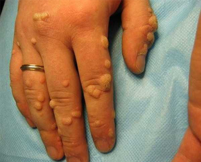

Според СЗО през 2019 г. честотата на заразяване с паразитна инвазия се
е увеличила със 17,6%. Освен това тези цифри включват не само населението на развиващите се
страни, но и проспериращия европейски регион.
Широко разпространената поява на хелминтоза се обяснява с
асимптоматичното протичане на заболяването в ранните стадии. Заразеният човек може дълго
време да не знае за наличието на паразити, но в същото време да заразява други.
Защо глистите са опасни?
Известни са повече от 360 вида глисти. Повечето от тях паразитират в
червата или черния дроб, но могат да мигрират към всякакви органи и системи: бели дробове,
сърце, централна нервна система, мускули, очни ябълки и мозък.
Последиците от наличието на паразити
Развитие на анемия, авитаминоза и анорексия;
Увреждане на тъканите и органите. Увеличава се рискът от
развитие на инфекция и отравяне на кръвта;
Патологии на нервната система. Токсините от паразитите
провокират безсъние, мигрена, раздразнителност, нервни сривове, инфаркти и инсулти;
Алергични реакции (кожен обрив, сърбеж, пукнатини и рани);
Образуването на папиломи, които могат да прераснат в рак;
При децата те могат да причинят забавяне на развитието, да
доведат до опасни усложнения;
При мъжете причиняват импотентност;
При жените намаляват фертилността.
Не пренебрегвайте проблема!
Как става заразяването с чревни паразити?
Стереотипът е, че човек може да се зарази само чрез храна и
необработена вода. Но, паразитите могат да проникнат и през кожата. Например, докато
използвате обществен транспорт или тоалетна.
Ларвите през порите навлизат в капилярите и се разпространяват по
цялото тяло чрез кръвния поток. За човек подобни пункции не са чувствителни - доста е трудно
да се забележи инфекцията. Можете също така да се заразите с паразити от животни и насекоми
чрез вдишване на микроскопични яйца заедно с прах.
Топ 3 метода за борба с
паразитите
Противопаразитна диета
- Контролирайте качеството на консумираната храна: не яжте немити
зеленчуци и плодове, непреработено месо (недопечено с кръв), сурова риба (ролове, суши и
др.) и сурово мляко
- Намалете приема на захар и сладкиши - те стимулират образуването на
патогенна микрофлора в червата.
Не забравяйте да спазвате основните правила за лична хигиена
В съвременния свят е трудно да не се докосват перилата в обществения
транспорт, да не се използват съдове в заведенията за обществено хранене или обществени
тоалетни. Просто следвайте основните правила: редовно мийте ръцете си и не докосвайте лицето
си.
Детоксикация
За да премахнете паразитите и техните токсини от тялото, трябва да
преминете курс на детоксикация с антипаразитното средство - .
Средството е с висока ефективност, няма противопоказания и странични
ефекти. Действието му е насочено към създаване на дискомфортни условия за паразитите, при
които те губят интерес към размножаването, отслабват и лесно се отстраняват от тялото.
Съставът на включва растителни екстракти (пелин, куркума,
готу кола, емблика и целина) с мощен антипаразитен ефект:
Причиняват парализа на паразитите;
Стимулират работата на черния дроб и жлъчката, което помага
за отстраняване на обездвижените паразити, техните ларви и яйца;
Възстановяват увредените тъкани и чревната микрофлора, което
помага за възстановяване на имунитета и премахва проблема с нестабилното тегло;
Създават здравословна алкална среда в червата, която
предпазва от повторна инфекция.
98% от заразените напълно са се отървали от всички паразити
89% забелязват подобрение в работата на цялото тяло
75% приемат за превенция и са доволни от резултата
Мнозина са свикнали да не обръщат внимание на неразположението. Може
дори да не подозирате, но с вероятност от 97-98% паразитите вече живеят в тялото ви. Ларвите
могат да бъдат навсякъде - в кръвта, червата, белите дробове, простатата, сърцето или
мозъка.
Да станете носител на паразити е по-лесно, отколкото да изядете
хамбургер. Достатъчно е да измиете недобре ръцете си преди ядене, да седнете на земята,
да целунете заразен човек, да не обработите драскотина, да играете с домашни любимци.
Препоръчвам ви да вземете курса докато паразитите не ви
причинят непоправима вреда.
Специално за нашите читатели производителят
продава средството срещу паразити на специална цена. Броят на опаковките с 50% отстъпка е
ограничен.
Паразитолог-инфекционист Трудов стаж 17 години
Съавтор на учебник по инфекциология
Коментари към статията:
Цветелина
Какъв ужас!!!!! Можете да живеете и дори да не знаете, че
във вас живеят паразити! Толкова се страхувам, че си мия ръцете по 30 пъти на
ден. Със сигурност ще поръчам това средство. Благодаря ви много за съвета!
Тъй като вече водим такъв интимен разговор, признавам, че
семейството ни също имаше такъв проблем. Но знам за
отдавна, сестра ми също се лекуваше с него. Затова започнахме да го приемаме
веднага и оздравяхме много бързо. Напълно съм съгласна с автора, наложително е
да се извършва профилактика.
Госпожа, вероятно никога не си срещала хелминти, затова
разсъждаваш по този начин. Ще ти кажа следното - много е трудно да ги откриеш.
Някои хора живеят с години и не подозират, че са заразени.
спаси и моето семейство. Синът
ми донесе кученце от двора, аз и съпругът ми се съгласихме да го приемем. Кой
знаеше, че толкова много проблеми ще влязат в къщата ни с това кученце? Първо,
по някаква причина започнаха симптомите при съпруга ми. После синът ми, аз
веднага разбрах, че това не е обикновена настинка. Отидохме да се изследваме -
всичко се потвърди - паразитна инфекция. Те страдаха в продължение на 2 седмици,
опитваха се да лекуват с народни методи. Всичко това бяха глупости! Веднага след
като започнаха да приемат това противоглистно лекарство ,
веднага се почувствах по-добре. Метеоризмът и повръщането изчезнаха на втория
ден. След седмица изследванията показаха пълно възстановяване.
Правилно пишат - можете да се заразите с паразити в
обществения транспорт, както в офиса, така и в пощата и чрез храната. Съпругът
ми например обича месо с кръв, така че имаме антипаразитни лекарства, които не
излизат от употреба. В края на краищата е по-добре да сме предпазливи, отколкото
да съжаляваме. Сега ще поръчам този за нас.
Препоръчвам това средство на всички, които са изправени
пред проблема с папилома. Ръцете ми бяха покрити с папиломи чак до лактите.
Много се страхувах, че ще прерасне в рак. Никакви антибиотици и никакво лечение
не ми помогнаха. Папиломите то намаляваха, то след известно време нарастваха
отново и се появиха на краката. Няма да пожелая на врага си да премине през
това, което аз преживях. Останах вкъщи 8 месеца, трябваше да напусна работата си
и да се затворя от близките, за да не ги изплаша и да не ги заразя... Ужас. Но
слава на Бог, сега всичко е в миналото. По щастлив шанс разбрах за . Взимах го в продължение на 3 седмици и чак тогава забелязах
резултата - всеки ден възпаленията ставаха все по-малко. Отървах се от папиломи,
но ще продължа да пия това средство за профилактика. Не искам да се повтори
отново това, което преживях.
като цяло, е добро средство,
казвам ви, като практикуващ лекар. Жалко само, че не можете да го получите
навсякъде. Продава се само на един сайт и това е! Препоръчвам го на много от
моите пациенти, казвам им да го поръчват само от официалния представител, но те
го купуват навсякъде и след това се оплакват, че няма ефект.
Все още не е проучено колко вида паразити съществуват, но
хората вече страдат от тяхното действие. Чувал съм, че има 19 вида паразити,
които дори могат да убият човек. Трябва да ги убием с различни лекарства и
антибиотици.
Взехме котка от улицата. Изкъпахме я, дори не й
позволявахме да спи на леглото и дивана. Но забравихме да я проверим за наличие
на паразити. В резултат на това се заразих от нея. Измъчих се с тези паразити,
получих някакъв обрив по кожата, чувствах се зле. Антибиотиците не ми помогнаха.
Сега ще поръчам този продукт за себе си.
Антибиотиците няма да помогнат да се отървете от паразити
или хелминти; това е широкоспектърно средство. В този случай се нуждаете от
средство, което удря локално в зоната на действие на паразитите и потиска
жизнената им активност. Като алтернатива, вземете този . Антипаразитните средства просто разграждат тези същества и те напускат
тялото по естествен начин.
Благодаря ви, вече разбрах за антибиотиците.
Лекарят каза още, че антибиотиците нямат ефект върху паразитите, само
флората в организма се убива и, напротив, помагат на паразитите да се
размножават там.
Добър ден на всички читатели. Много се радвам, че намерих
потвърждение на моите мисли в интернет. Съпругът ми също започна да се оплаква
от постоянна диария и главоболие. Отначало си помислих, че е отравяне, но
никакви хапчета против интоксикация не помогнаха. Симптомите останаха. И тогава
попаднах на тази статия. Веднага поръчах за него това антипаразитно средство . След курса всичко е наред. Дори се подобри и
интимния ни живот.Така че препоръчваме. Горещо!


Коментари към статията:
Цветелина
Какъв ужас!!!!! Можете да живеете и дори да не знаете, че във вас живеят паразити! Толкова се страхувам, че си мия ръцете по 30 пъти на ден. Със сигурност ще поръчам това средство. Благодаря ви много за съвета!
ОтговорКрасимира
Тъй като вече водим такъв интимен разговор, признавам, че семейството ни също имаше такъв проблем. Но знам за отдавна, сестра ми също се лекуваше с него. Затова започнахме да го приемаме веднага и оздравяхме много бързо. Напълно съм съгласна с автора, наложително е да се извършва профилактика.
ОтговорМилена
Просто трябва да си миете ръцете!
ОтговорВики
Госпожа, вероятно никога не си срещала хелминти, затова разсъждаваш по този начин. Ще ти кажа следното - много е трудно да ги откриеш. Някои хора живеят с години и не подозират, че са заразени.
ОтговорРосица
О, аз съм толкова подозрителна! Вече открих всички симптоми. Сега ще поръчам това средство за профилактика.
ОтговорВаня
спаси и моето семейство. Синът ми донесе кученце от двора, аз и съпругът ми се съгласихме да го приемем. Кой знаеше, че толкова много проблеми ще влязат в къщата ни с това кученце? Първо, по някаква причина започнаха симптомите при съпруга ми. После синът ми, аз веднага разбрах, че това не е обикновена настинка. Отидохме да се изследваме - всичко се потвърди - паразитна инфекция. Те страдаха в продължение на 2 седмици, опитваха се да лекуват с народни методи. Всичко това бяха глупости! Веднага след като започнаха да приемат това противоглистно лекарство , веднага се почувствах по-добре. Метеоризмът и повръщането изчезнаха на втория ден. След седмица изследванията показаха пълно възстановяване.
ОтговорРадост
Не разбирам защо такива истории трябва да се пишат тук?
ОтговорVictory22
Това, което е естествено, не е грозно.
ОтговорВероника
Колко котки съм имала от детството ми насам, нито една от тях не е имала глисти.
ОтговорМоника
Правилно пишат - можете да се заразите с паразити в обществения транспорт, както в офиса, така и в пощата и чрез храната. Съпругът ми например обича месо с кръв, така че имаме антипаразитни лекарства, които не излизат от употреба. В края на краищата е по-добре да сме предпазливи, отколкото да съжаляваме. Сега ще поръчам този за нас.
ОтговорИванка
Препоръчвам това средство на всички, които са изправени пред проблема с папилома. Ръцете ми бяха покрити с папиломи чак до лактите. Много се страхувах, че ще прерасне в рак. Никакви антибиотици и никакво лечение не ми помогнаха. Папиломите то намаляваха, то след известно време нарастваха отново и се появиха на краката. Няма да пожелая на врага си да премине през това, което аз преживях. Останах вкъщи 8 месеца, трябваше да напусна работата си и да се затворя от близките, за да не ги изплаша и да не ги заразя... Ужас. Но слава на Бог, сега всичко е в миналото. По щастлив шанс разбрах за . Взимах го в продължение на 3 седмици и чак тогава забелязах резултата - всеки ден възпаленията ставаха все по-малко. Отървах се от папиломи, но ще продължа да пия това средство за профилактика. Не искам да се повтори отново това, което преживях.
 ОтговорРалица99
Какъв ужас разказа. Успех и бъди здрава!!!
ОтговорВасил
Егати, това изглежда Гадно!!! Няма да мога да заспя.
ОтговорСтефан
като цяло, е добро средство, казвам ви, като практикуващ лекар. Жалко само, че не можете да го получите навсякъде. Продава се само на един сайт и това е! Препоръчвам го на много от моите пациенти, казвам им да го поръчват само от официалния представител, но те го купуват навсякъде и след това се оплакват, че няма ефект.
ОтговорGirlBond
Пристигна, започвам лечение
ОтговорInsider77
Все още не е проучено колко вида паразити съществуват, но хората вече страдат от тяхното действие. Чувал съм, че има 19 вида паразити, които дори могат да убият човек. Трябва да ги убием с различни лекарства и антибиотици.
ОтговорСиси
Взехме котка от улицата. Изкъпахме я, дори не й позволявахме да спи на леглото и дивана. Но забравихме да я проверим за наличие на паразити. В резултат на това се заразих от нея. Измъчих се с тези паразити, получих някакъв обрив по кожата, чувствах се зле. Антибиотиците не ми помогнаха. Сега ще поръчам този продукт за себе си.
ОтговорД-р Николов
Антибиотиците няма да помогнат да се отървете от паразити или хелминти; това е широкоспектърно средство. В този случай се нуждаете от средство, което удря локално в зоната на действие на паразитите и потиска жизнената им активност. Като алтернатива, вземете този . Антипаразитните средства просто разграждат тези същества и те напускат тялото по естествен начин.
ОтговорOliviaFlowers
Благодаря ви, вече разбрах за антибиотиците. Лекарят каза още, че антибиотиците нямат ефект върху паразитите, само флората в организма се убива и, напротив, помагат на паразитите да се размножават там.
ОтговорNikc8888
Защо да се тровите с химия и антибиотици, ако можете да изберете средство с естествен състав. Не разбирам тази глупост...
ОтговорHappyWoman
Добър ден на всички читатели. Много се радвам, че намерих потвърждение на моите мисли в интернет. Съпругът ми също започна да се оплаква от постоянна диария и главоболие. Отначало си помислих, че е отравяне, но никакви хапчета против интоксикация не помогнаха. Симптомите останаха. И тогава попаднах на тази статия. Веднага поръчах за него това антипаразитно средство . След курса всичко е наред. Дори се подобри и интимния ни живот.Така че препоръчваме. Горещо!
ОтговорМишо
Благодаря за информацията! По-добре да играя на сигурно и да изпия един курс, няма да е по-лошо.
Отговор